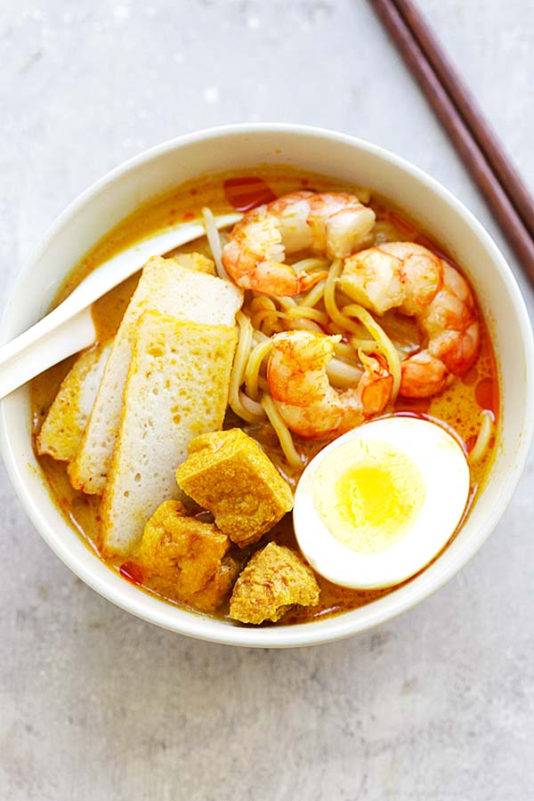

Laksa Recipe

Laksa - Spicy street food noodle dish popular in Malaysia and Singapore.
This homemade curry laksa recipe is so easy and delicious!
Ingredients required:
- 3 tablespoons cooking oil
- 1/2 pack (120g) Malaysian instant curry
- 2 cups (1 can) chicken broth
- 2 cups water
- 2 stalks lemongrass, white part only, pounded
- 10 tofu puffs, cut into pieces
- 1/2 cup evaporated milk
- 1/2 cup coconut milk
- salt to taste
How to make the Laksa step-by-step
- In a stockpot, add the oil and saute the instant curry paste until aromatic.
- Add the chicken broth, water, lemongrass, tofu puffs and bring the soup to a boil.
- Lower the heat to simmer.
- Add the coconut milk and evaporated milk.
- Add salt to taste, and keep the stock on simmer.
- Rinse the yellow noodles and bean sprouts seperately, drained and set aside.
- To assemble a bowl of laksa for serving, bring to boil some yellow noodles and a handful of bean sprouts.
- Drain noodles and bean sprouds and transfer to a serving bowl.
- Top the noodles with 2-3 shrimp, a few pieces of fish cake, and some eggs.
- Using a ladle, pour the soup and a few pieces of tofu puffs on top of the noodles.
- Finally, serve immediately.